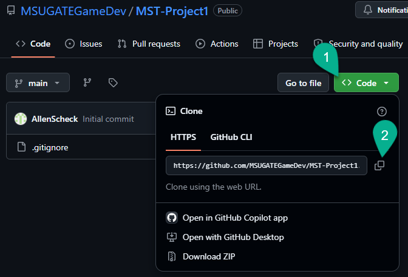
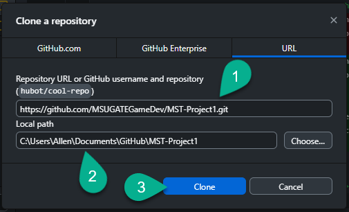
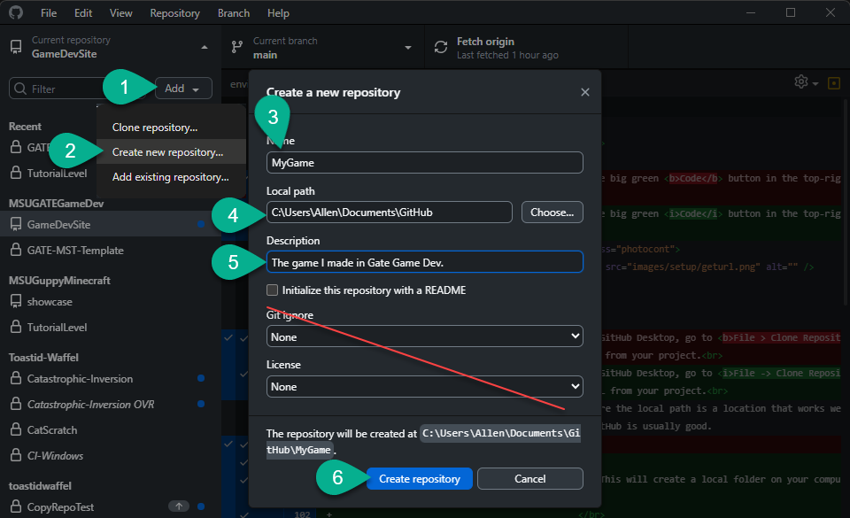
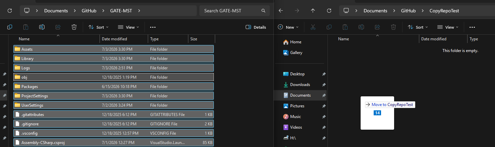
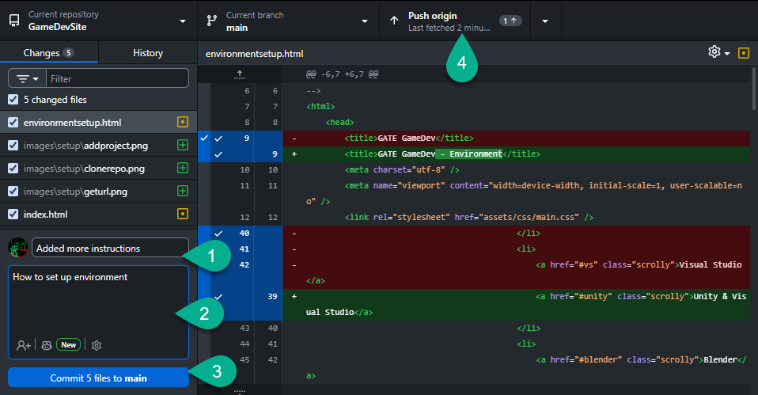
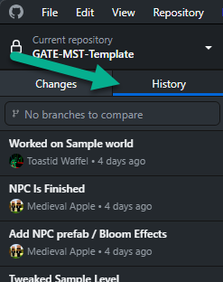
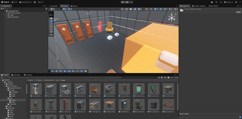
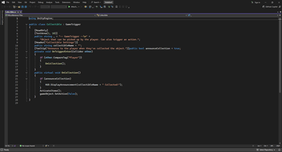
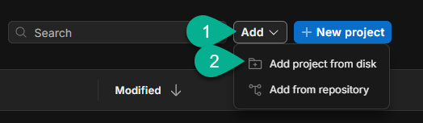
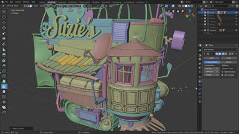

Environment Setup
Installing and setting up the programs to build your game
GitHub
GitHub is a website that provides easy-to-use version control, backup, and collaboration. It is completely free for small-to-midsized projects.
- If you don't already have a GitHub account, sign up for one on their website.
- Download GitHub Desktop to your computer.
- Sign in to GitHub Desktop with your GitHub account.
-
In your web browser, go to https://github.com/orgs/MSUGATEGameDev/repositories and find and select your project.
-
Click the big green Code button in the top-right. Copy the HTTPS URL provided.

-
Back in GitHub Desktop, go to File -> Clone Repository, select URL, and paste in the URL from your project.
Ensure the local path is a location that works well for you. The default location of Documents\GitHub is usually good.
This will create a local folder on your computer.
- Your project folder will take a minute or so to download, but it is only downloading the parts of the project that are unique to the project and will not be automatically re-created when it's opened in the editor.
While we will leave the repo publicly visible until we need to clear them for next year's class, your account will not be able to push changes back up to it. In order to continue to work on your project with backup and version control, you will want to create a new repo on your own account and copy the files to that repo.
-
Click the Add button in the top-right of GitHub Desktop and select Create new repository.
Give your new repository a name, local path, and description, but otherwise leave it blank.

-
In your file explorer, open the folder for the old repository and the folder for the new repository. Select all the files and folders from the old one, and move them to the new one.
Make sure the .gitignore file is included in the copy. If you have Hidden Items visible in the file explorer, make sure you do NOT copy the .git folder. (If hidden items are not visible, it will not be copied.)
If it asks about .gitattributes or any files that are open in Unity Editor, you can ignore them.
- Once it's done moving the files, look at the list of changes in GitHub. You should have about 2,000 changes listed. If there are more than 10,000, your .gitignore file probably wasn't copied correctly and you will need to make sure it has the .gitignore made for Unity or it will be too big for GitHub.
- Select Publish Repository, give it a name and description, mark it as private if you desire, and select Publish repository.
As you work on your project, you will notice GitHub Desktop tracking your changes.
- When you would like to save your progress and create a restore point, enter a summary and description of the changes you made and hit the Commit button in the bottom left.
-
To back up your changes online, select the Push Origin button on the top right.

-
You can review and revert your changes in the History tab.

Unity & Visual Studio
Unity is a Game Engine that helps you combine all the elements of a video game into a cohesive product. It is, in our opinion, the most beginner-friendly of the full-featured publicly-available engines.
It is completely free for developers who make less than $200,000 annually from games made in Unity, and costs $2,000 a year for those who make over $200,000 from Unity games in that year (at most, 1% of revenue).

Visual Studio
is an IDE (Integrated Development Environment), which is essentially an advanced text editor made to help you write code.
It has color coding, auto formatting, error detection, and auto-complete features which make it easier to write code for Unity. It comes bundled with Unity as a free add-on.

- If you do not already have a Unity account, create one on the Unity Website.
-
Download Unity from the Unity website.
This will download the Unity Hub to your desktop, which allows you to install various editions of the Unity Editor and manage your projects. - Open Unity Hub, sign in, and agree to the Software License Terms.
-
Go to Installs and select Install Editor. You can install the recommended or latest LTS version.
If you want the exact same version of Unity Editor that we used in the classroom you can install Unity 6000.3.14f1, through the Unity hub following this link from the Unity website but they should be pretty similar. -
Make sure Microsoft Visual Studio Community is selected and click Continue.
Agree with the Terms of Service and click Install.
The download and install will take a while. You can track the progress of the install in the Downloads section in the top right. -
Once the editor and Visual Studio are installed, go to Projects and click the Add button in the top-right and select
Add project from disk.
Navigate to the repo folder you created in GitHub (select the folder that directly contains the folders labeled Assets, Library, Log, Packages, ...etc.). This will add it as a project in Unity.
- Open the project. Unity will need to install another 2GB+ of standard libraries used by the game, so it may take a while to open the first time.
Blender
If you wish to make your own 3D models for your game or modify existing models, we highly recommend Blender. It is completely free, open-source, and fairly easy to use. Models made in Blender are natively supported in Unity, so you can simply drop them into your Unity project folder and use them.

- You can download it from blender.org
-
Blender has one minor issue in that it defines the horizontal axes as X and Y with the vertical axis being Z, while Unity defines the horizontal axes as X and Z with the vertical axis being Y. To account for this, Unity imports Blender files at a 90-degree angle.
This may or may not be frustrating to work with. We've created a file in Blender with the starter cube already rotated to help design models with the same axes in mind. It is also shrunk to 1x1x1 with a corner on the origin instead of the default 2x2x2 with the origin in the center. -
You can find this file (Unit Cube.blend) in the project folder under Assets\Visual Elements\Models\Templates
In Blender, click File -> Defaults -> Save Startup File to tell it to always start with this file.